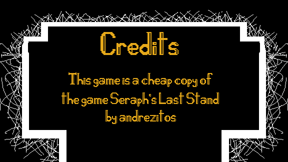
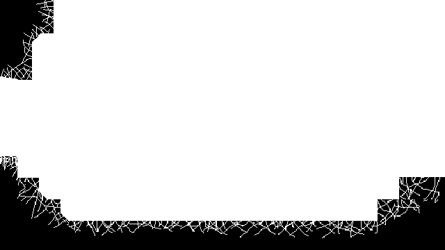
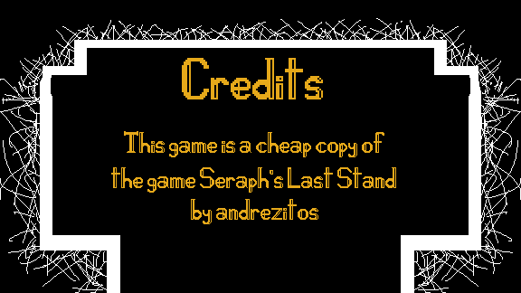
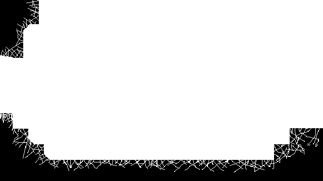
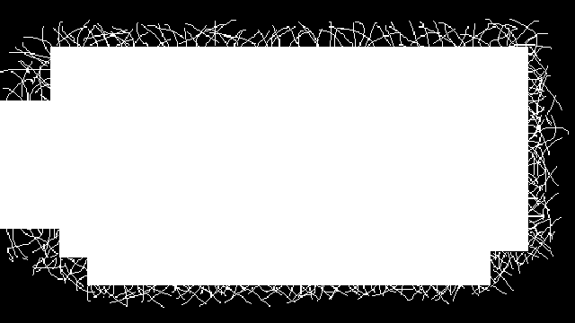
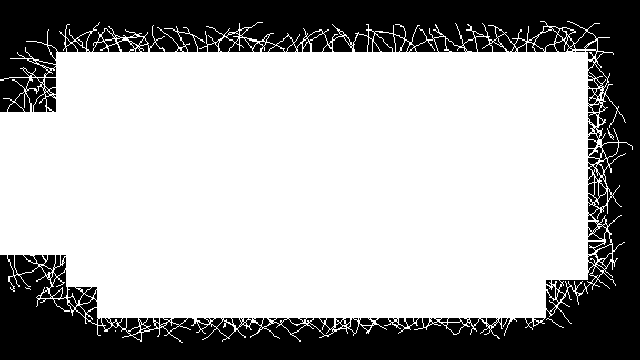

Nesse jogo, você controla um robô que está tentando sobreviver a ondas de inimigos voadores que vão te enferrujar.
Sobre o Jogo
Robot's Last Stand é um shooter arena criado para a Jame Gam #51, onde você assume o papel de um robô solitário lutando contra ondas crescentes de inimigos. Com foco em sobrevivência, upgrades rápidos e ação intensa, o jogo oferece partidas curtas, desafiadoras e cheias de adrenalina, enquanto você tenta resistir o máximo possível antes que o enxame mecânico te alcance.
Galeria
 




 
